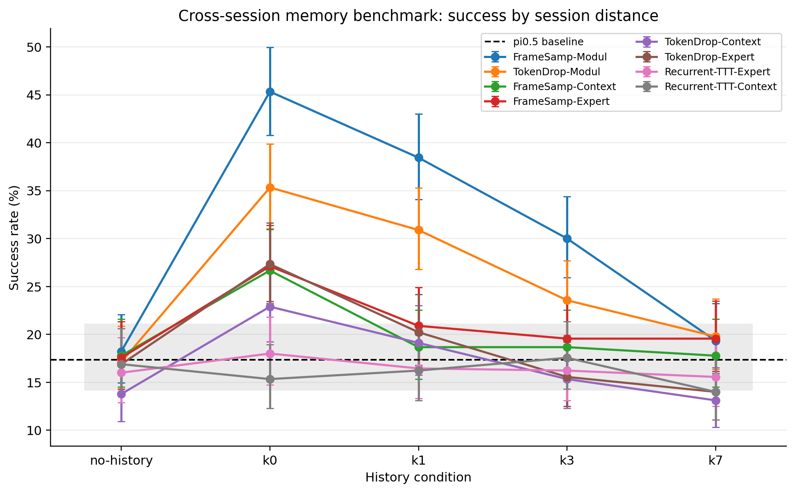
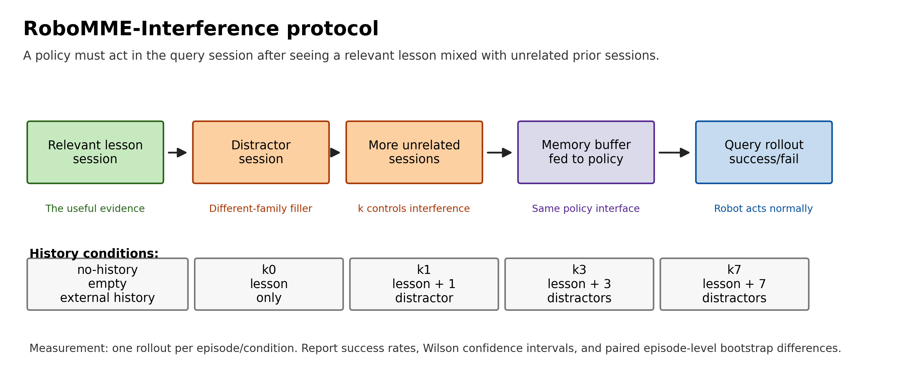
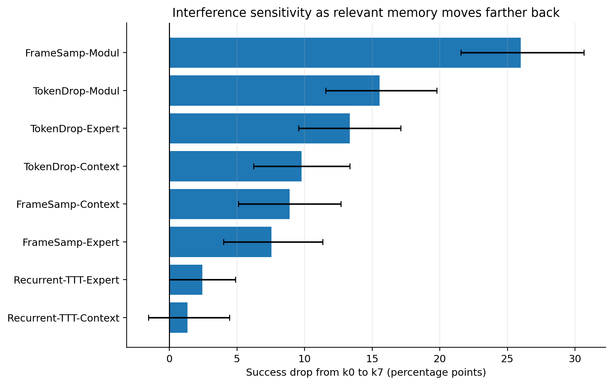
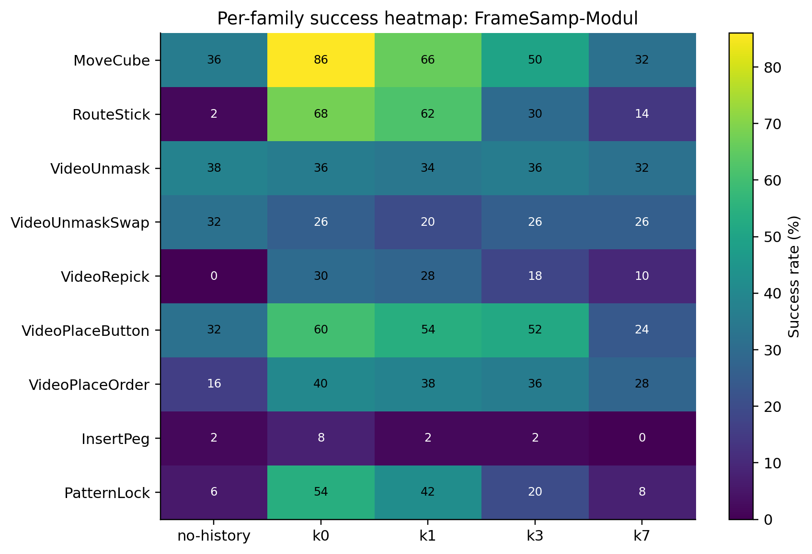

k0 over no-history
Cross-session robot memory benchmark
Benchmarking Robot Memory Under Interference
A cross-session benchmark for memory-augmented VLAs.
RoboMME-Interference evaluates whether robot memory systems can still use a relevant prior session after unrelated robot experiences are inserted into the history buffer.

18,450
completed rollouts
9
task families
9
evaluated systems
5
history conditions
Protocol
Relevant memory, then unrelated experience.
RoboMME-Interference gives each query episode a history buffer. In k0,
the buffer contains the relevant lesson session. In
k1, k3, and k7, unrelated
different-family sessions are inserted after the relevant lesson.
The policy interface stays fixed.

Result
Near-session memory helps. Interference erodes it.
FrameSamp-Modul is the strongest system in this grid, rising from
18.2% without history to 45.3% at k0. By
k7, its success drops back near the no-history floor.
k0 over no-history
k7 versus k0

k0 to
k7.

Headline table
Main success rates.
| System | No history | k0 | k1 | k3 | k7 |
|---|---|---|---|---|---|
| pi0.5 baseline | 17.3% | - | - | - | - |
| FrameSamp-Modul | 18.2% | 45.3% | 38.4% | 30.0% | 19.3% |
| TokenDrop-Modul | 17.1% | 35.3% | 30.9% | 23.6% | 19.8% |
| FrameSamp-Context | 17.8% | 26.7% | 18.7% | 18.7% | 17.8% |
| FrameSamp-Expert | 17.6% | 27.1% | 20.9% | 19.6% | 19.6% |
| TokenDrop-Context | 13.8% | 22.9% | 19.1% | 15.3% | 13.1% |
| TokenDrop-Expert | 16.9% | 27.3% | 20.2% | 15.6% | 14.0% |
| Recurrent-TTT-Expert | 16.0% | 18.0% | 16.4% | 16.2% | 15.6% |
| Recurrent-TTT-Context | 16.9% | 15.3% | 16.2% | 17.6% | 14.0% |
Artifacts
Code, data, and paper.
The repository includes the canonical rollout table, result manifest, generated figures, analysis scripts, and a LaTeX paper draft.
Citation
Cite this benchmark.
@misc{shah2026robotmemoryinterference,
title = {Benchmarking Robot Memory Under Interference},
author = {Shah, Soumil},
year = {2026},
url = {https://robotmemorybench.com}
}